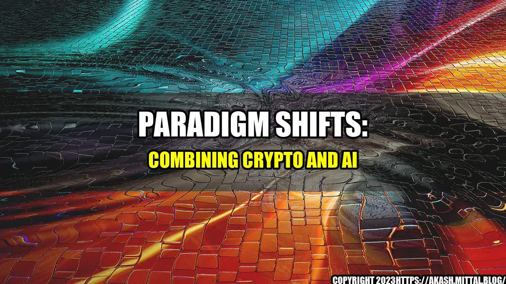

Paradigm Shifts: Combining Crypto and AI

It was early morning on a cool autumn day, and Sarah was sitting in her office chair, sipping her coffee and staring at her computer screen. She had been working as a crypto trader for Paradigm Shifts for six months now and had made a good profit so far. However, something was missing. She felt that she could do more with the data that she had been analyzing, something more intelligent and sophisticated.
That's when a colleague mentioned the company's new venture into AI, and Sarah's interest piqued. She began to research and study AI and machine learning algorithms, and how they could be applied to crypto trading.
- She started by analyzing trends and patterns in the market data using AI algorithms, which helped her make more accurate predictions of where the market was heading.
- She then implemented a reinforcement learning algorithm that helped her optimize her trading strategy by allowing the AI to learn from the outcomes of previous trades.
- Finally, she used natural language processing algorithms to sift through news and social media to identify market-moving events that could impact the prices of crypto assets.
As a result, Sarah's trades became more profitable and she was able to take on more assets under management. Moreover, the integration of AI into Paradigm Shifts' trading strategies had been a game changer for the company, increasing their overall trading effectiveness and customer satisfaction rates.
Paradigm Shifts is just one example of how the confluence of crypto trading and AI is changing the landscape of financial markets. By combining the cutting-edge technology of blockchain and artificial intelligence, financial firms are able to create advanced trading systems that are more efficient, effective, and intelligent than ever before.
Here are a few quantifiable examples of how crypto and AI are shaking up the financial industry:
- A recent report by Accenture predicts that by 2025, AI will enable banks to save up to $447 billion annually by automating tasks and improving efficiencies.
- According to a study by Deloitte, 43% of financial firms already use some form of AI in their business operations, with another 20% planning to do so in the near future.
- AI-driven hedge funds outperformed their traditional counterparts by an average of 8.4% in 2019, according to Eurekahedge.
As more and more companies start to dive into this space, the potential for innovation and disruption is limitless. However, there are a few challenges that need to be overcome in order to maximize the potential of crypto AI:
- Regulation: As with any new financial technology, there is a need for government regulation to ensure that the technology is being used safely and not being abused for illegal activities such as money laundering.
- Data Quality: In order to derive meaningful insights from data, it must be high-quality and accurate. Crypto data, in particular, can be difficult to verify and messy, making AI less effective if the data is not well-governed.
- Talent Shortage: The demand for professionals who can develop and implement AI algorithms is rapidly increasing, creating a talent shortage that could make it difficult for companies to keep up with the pace of innovation.
In conclusion, the combination of crypto and AI represents a paradigm shift in the financial industry, allowing for more advanced and sophisticated trading strategies that are more efficient and effective than ever before. However, in order for businesses to fully capitalize on the potential of this technology, they must overcome challenges such as data quality, talent shortage, and regulation. The future is bright for crypto AI, and companies who are able to navigate these challenges will reap the benefits.
Reference urls: https://www.accenture.com/_acnmedia/PDF-112/Accenture-2021-Bank-Technology-Vision-Report.pdf https://www2.deloitte.com/global/en/pages/about-deloitte/articles/financial-innovation-on-the-blockchain-ai.html https://analyticsindiamag.com/novel-ai-applications-in-the-crypto-industry/ https://www.sciencedirect.com/science/article/pii/S2405452620309823 Hashtags: #CryptoAI #FinancialInnovation #BlockchainTech #DataAnalytics Category: Finance, Artificial Intelligence

Curated by Team Akash.Mittal.Blog
Share on Twitter Share on LinkedIn